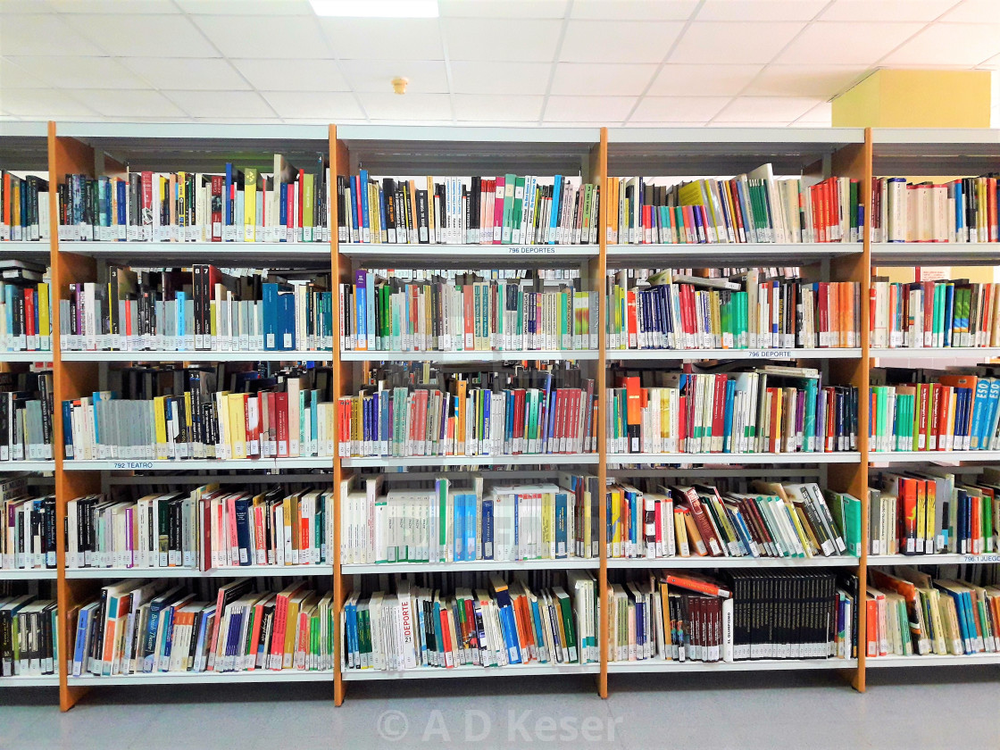

What does Guisad Valley National High School stand for?
Guisad Valley National High School (also known as Guisad Valley NHS and GVNHS) is a public secondary school in Baguio City, Benguet.
Formerly an annex of Pines City National High School (PCNHS), GVNHS officially became an independent school in 2010 through RA 9918. At present, Guisad Valley National High School provides education to students in Grades 7-12. Its senior high school (SHS) department currently offers strands such as Accountancy, Business, and Management (ABM), Humanities and Social Sciences (HUMSS), and Home Economics (HE).
Guisad Valley National High School is duly recognized by the Department of Education (DepEd).
| Contact and Address |
|---|
| Location:Bado Dangwa Street,Cresencia Village Baguio City |
| Phone: (074) 620 3192 |
| email: gvnhs9918@yahoo.com |